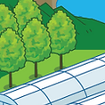
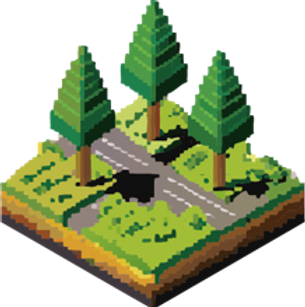

Carbon flux
Gross primary productivity (GPP)
Ecosystem respiration (Reco)
Net ecosystem exchange (NEE)



Gross primary productivity (GPP)
Ecosystem respiration (Reco)
Net ecosystem exchange (NEE)
Vegetation carbon stock
Aboveground biomass

Leaf area index
Land surface structure
(landcover, etc)
Last updated : 2026/09/07
Son, B., Sung, T., Bae, S., Choo, M., Im, J., Lee, Y., Rana, S. M. S., Cho, D., Yoo, C., Hong, J., Lee, H., & Kim, H. S. (2026). UNIQUE: UNified, high-resolution Intelligent carbon QUantification and Explanation. Remote Sensing of Environment, 346, 115636.
Bae, S., Son, B., Sung, T., Kim, Y., Kim, Y., & Im, J. (2026). All-sky hourly estimation over East Asia using Himawari-8 AHI and multi-source data: investigating the main climatic drivers of afternoon depression and intraday variability in gross primary productivity. GIScience & Remote Sensing, 63(1), 2609352.
Lee, Y., Jegal, S., Lee, S., Son, B., & Im, J. (2025). Impact of urban tree canopy on land surface temperature and green space inequities in Suwon, South Korea. Korean Journal of Remote Sensing, 41(5), 843-857.
Kim, W., Lee, J., Kang, Y., Im, J., Son, B., & Lee, J. (2025). Retrieving Woody Components from Time-Series Gap-Fraction and Multispectral Satellite Observations over Deciduous Forests. Remote Sensing, 18(1), 10.
Bae, S., Son, B., Sung, T., Kang, Y., & Im, J. (2025). Advancing hourly gross primary productivity mapping over East Asia using Himawari-8 AHI and artificial intelligence: Unveiling the impact of aerosol-induced radiation dynamics. Remote Sensing of Environment, 323, 114735.
Lee, J., & Im, J. (2024). Quantitative assessment of the scale conversion from instantaneous to daily GPP under various sky conditions based on MODIS local overpassing time. GIScience & Remote Sensing, 61(1), 2319372.
Lee, Y., Son, B., Im, J., Zhen, Z., & Quackenbush, L. J. (2024). Two-step carbon storage estimation in urban human settlements using airborne LiDAR and Sentinel-2 data based on machine learning. Urban Forestry & Urban Greening, 94, 128239.
Lee, J., Im, J., Lim, J., & Kim, K. (2024). Insights into Canopy Escape Ratio from Canopy Structures: Correlations Uncovered through Sentinel-2 and Field Observation. Forests, 15(4), 665.
Choo, M., Yo, C., Im, J., Cho, D., Kang, Y., Oh, H., & Lee, J. (2023). Trend Analysis of Vegetation Changes of Korean Fir (Abies koreana Wilson) in Hallasan and Jirisan Using MODIS Imagery.
Bae, S., Son, B., Sung, T., Lee, Y., Im, J., & Kang, Y. (2023). Estimation of fractional urban tree canopy cover through machine learning using optical satellite images. Korean Journal of Remote Sensing, 39(5_3), 1009-1029.
Lee, Y., Son, B., & Im, J. (2023). Detection of Individual Trees in Human Settlement Using Airborne LiDAR Data and Deep Learning-Based Urban Green Space Map. Korean Journal of Remote Sensing, 39(5), 1145-1153.
Son, B., Lee, Y., & Im, J. (2021). Classification of urban green space using airborne LiDAR and RGB ortho imagery based on deep learning. Journal of the Korean Association of Geographic Information Studies, 24(3), 83-98.
Park, H., Im, J., & Kim, M. (2019). Improvement of satellite-based estimation of gross primary production through optimization of meteorological parameters and high resolution land cover information at regional scale over East Asia. Agricultural and Forest Meteorology, 271, 180-192.
Lee, J., Im, J., Kim, K., & Quackenbush, L. J. (2018). Machine learning approaches for estimating forest stand height using plot-based observations and airborne LiDAR data. Forests, 9(5), 268.
Fang, F., Im, J., Lee, J., & Kim, K. (2016). An improved tree crown delineation method based on live crown ratios from airborne LiDAR data. GIScience & Remote Sensing, 53(3), 402-419.
Li, M., Im, J., Quackenbush, L. J., & Liu, T. (2014). Forest biomass and carbon stock quantification using airborne LiDAR data: A case study over Huntington Wildlife Forest in the Adirondack Park. IEEE Journal of Selected Topics in Applied Earth Observations and Remote Sensing, 7(7), 3143-3156.
{kind=link}
{kind=link}
{kind=link}